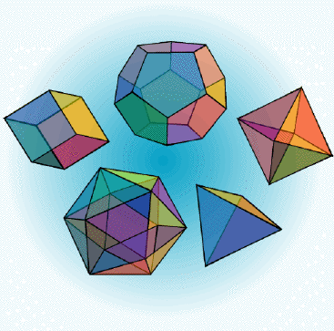

Matematica per
la scuola superiore

“La matematica è la suprema conquista intellettuale dell'uomo, la creazione più originale dello spirito umano. La musica allieta e calma l'animo, la pittura delizia la vista, la poesia suscita le emozioni, la filosofia appaga la mente, l'ingegneria migliora la vita materiale dell'uomo, ma la matematica offre tutti questi valori.”
M. Kline, Matematica. La perdita della certezza
Benvenuti nel mio sito personale! Sono un insegnante di matematica e fisica della scuola superiore, ma soprattutto un appassionato delle mie materie e di LaTeX. Questo sito è dedicato a queste mie passioni, con particolare attenzione ai risvolti didattici.
Ultime news
| 28/7/2021 | - | “Le equivalenze asintotiche e la somma di funzioni, osservazioni didattiche” aggiunto nella sezione Articoli. |
| 8/3/2021 | - | “Introduzione all'analisi non standard” aggiunto nella sezione Articoli. |
| 7/1/2021 | - | “Il calcolo dell'insieme immagine” aggiunto nella sezione Materiali didattici. |
| 21/08/2020 | - | “Esempi e controesempi” aggiunto nella sezione Materiali didattici. |
| 20/10/2019 | - | Costruita la pagina del Corso LaTeX. |
| 11/3/2019 | - | “Introduzione all'analisi non standard” aggiunto nella sezione Articoli. |
| 28/9/2018 | - | “Un modello dei numeri iperreali” aggiunto nella sezione Articoli. |
| 14/7/2018 | - | “Il mondo iperreale attraverso i microscopi ottici” aggiunto nella sezione Articoli. |
| 29/6/2017 | - | “Introduzione all'analisi non standard” aggiunto nella sezione Articoli. |
| 7/5/2017 | - | Aggiornata la sezione Materiali didattici con la presentazione “Calcolo delle probabilità”. |